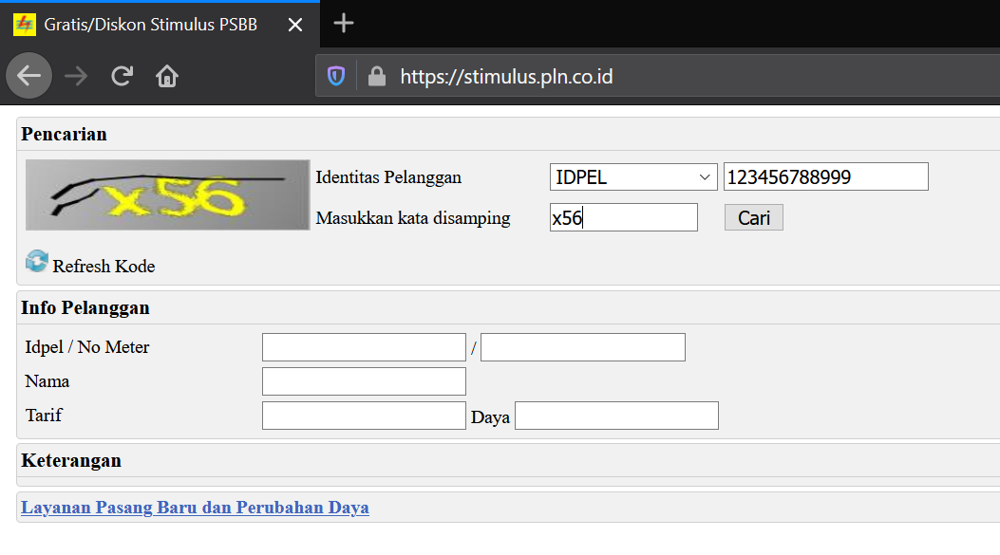

Jadwal registrasi ulang*
| NO | SELEKSI | REGISTRASI ONLINE | PEMBAYARAN UKT |
|---|---|---|---|
| 1. | SNBP | 01 - 10 April 2023 | 14 - 28 April 2023 |
| Pengiriman Akun Admisi ke email Camaba | 29 - 31 Maret 2023 | Penetapan UKT bisa dicek di admisi/login kembali (13 April 2023; Sore) | |
| 2. | ADIK (Afirmasi Dikti) | - | - |
| 3. | SNBT | - | - |
| 4. | SMMPTN BARAT | - | - |
| 5. | PRESTASI | - | - |
*) Jika ada perubahan jadwal akan kami informasikan melalui web / email.
Diagram alur proses registrasi ulang secara online.

Penjelasan registrasi ulang secara online sesuai dengan jadwal dan diagram alur di atas adalah sebagai berikut.
Mempersiapkan dokumen yang harus diunggah (upload) dalam bentuk pdf atau jpg (ukuran file tidak melebihi 250 KB).
Dokumen-dokumen yang harus disiapkan :
Pakta Integritas Mahasiswa (download, cetak, isi, scan Asli).
Surat Pernyataan Mematuhi Peraturan dan Kesanggupan Membayar BIaya Pendidikan
(download, cetak, isi, scan Asli).
Ijazah bagi lulusan 3 tahun terakhir : 2021, 2022, dan 2023 / Surat Keterangan Lulus (SKL) bagi lulusan tahun 2023 yang belum memperoleh Ijazah / Surat Keterangan Belum Ujian dari Sekolah bagi yang belum ujian. (Asli/Dilegalisir)
Bisa juga dengan meminta Surat Keterangan Kelas XII dari Sekolah.
Pdf Kartu Peserta Tes (Asli) – SNBP/UTBK/SMM
Pdf Akta Kelahiran (Asli atau Copy yang Dilegalisir)
Pdf Kartu Keluarga (Asli atau Copy yang Dilegalisir)
Bukti pembayaran listrik bagi pelanggang pascabayar atau bukti pembelian token listrik bagi pelanggan prabayar (Asli)
Bagi pelanggan listrik 450VA yang digratiskan dan tidak memiliki bukti pembayaran bisa membuatnya di halaman https://stimulus.pln.co.id/ seperti pada gambar berikut.

Bukti SPT Pajak Penghasilan Tahunan bagi yang memiliki, seperti contoh berikut. (Asli Pdf)

Pilih salah satu yang paling sesuai.
- SPPT Pajak Bumi dan Bangunan (PBB) tiga tahun terakhir (pilih salah satu)
- Surat Pernyataan tentang Luas Tanah dan Bangunan Rumah yang ditempati bagi yang tidak punya SPPT
- Jika Rumah Mengontrak dan tidak ada Bukti PBB lampirkan Bukti pembayaran sewa rumah bagi yang mengontrak/sewa ditambah Surat Pernyataan tentang Luas Tanah dan Bangunan Rumah yang ditempati
Surat Tes Bebas Narkoba terbaru dari Rumah Sakit Pemerintah/BNN (scan Asli dan upload)
Surat Keterangan Kesehatan dari Rumah Sakit/Klinik/Puskesmas (scan Asli dan upload)
Surat Sehat, Buta Warna dan Narkoba harus yang terbaru atau pemeriksaan mulai tanggal 29 Maret - 10 April 2023
Surat Pemeriksaan Buta Warna dari Rumah Sakit/Klinik/Puskesmas untuk Program Studi berikut (scan dan upload) :
No. Program Studi Keterangan 1. Pendidikan Biologi Tidak Boleh Buta Warna 2. Pendidikan Guru Sekolah Dasar Tidak Boleh Buta Warna 3. Pendidikan Guru Pendidikan Anak Usia Dini Tidak Boleh Buta Warna 4. Pendidikan Fisika Tidak Boleh Buta Warna 5. Pendidikan IPA Tidak Boleh Buta Warna 6. Pendidikan Kimia Tidak Boleh Buta Warna 7. Pendidikan Vokasional Teknik Mesin Tidak Boleh Buta Warna 8. Pendidikan Vokasional Teknik Elektro Tidak Boleh Buta Warna 9. Bimbingan dan Konseling Tidak Boleh Buta Warna 10. Pendidikan Pancasila dan Kewarganegaraan Tidak Boleh Buta Warna 11. Pendidikan Sejarah Tidak Boleh Buta Warna 12. Pendidikan Seni Pertunjukan Tidak Boleh Buta Warna 13. Teknik Mesin Tidak Boleh Buta Warna 14. Teknik Elektro Tidak Boleh Buta Warna 15. Teknik Industri Buta Warna Sebagian / Partial masih boleh 16. Teknik Metalurgi Tidak Boleh Buta Warna 17. Teknik Kimia Tidak Boleh Buta Warna 18. Teknik Sipil Tidak Boleh Buta Warna 19. Informatika Tidak Boleh Buta Warna 20. Kedokteran Tidak Boleh Buta Warna 21. Gizi Tidak Boleh Buta Warna 22. Ilmu Keolahragaan Tidak Boleh Buta Warna 23. Keperawatan (D3 & S1) Tidak Boleh Buta Warna
Bukti Penghasilan Ayah atau diisi dengan penghasilan Wali yang membiayai Kuliah dengan ketentuan sebagai berikut.
Bagi Pekerjaan yang memiliki Bukti / Slip Gaji dari Petrusahaan/Kantor wajib melampirkan Slip Gaji dari Perusahaan/Kantor tidak boleh menggunakan Surat Keterangan dari Kelurahan atau Desa. Jika dikemudian hari ditemukan pemalsuan dokumen maka kami akan mengambil kebijakan yang diperlukan.
Dokumen yang diunggah (Slip Gaji/Surat Keterangan Penghasilan, dll.) adalah dokumen terbaru, Tanggal pembuatan tahun 2023
PNS/TNI/BUMN/Karyawan Swasta: Slip Gaji / Bukti Penghasilan (maksimal dua bulan terakhir), Asli dan Dicap dan Ditandatangani.
Wiraswasta/Petani/Pedagang/Buruh/Pekerjaan yang tidak mempunyai Slip Gaji/Tidak Mempunyai Pekerjaan Tetap : Surat Keterangan Penghasilan dari Kelurahan dengan mencantumkan NAMA PEKERJAAN dan NOMINAL PENGHASILANNYA. Asli dan Dicap dan Ditandatangani.
Pensiunan PNS : Surat Pensiun / print out Buku Rekening Pensiun (max dua bulan terakhir). (scan Asli dan upload)
Pensiunan Swasta : Surat Keterangan Pensiun dari Kantor. (scan Asli dan upload)
Jika Ibu hanya Ibu Rumah Tangga lampirkan Surat Keterangan dari Kelurahan.
Jika Ayah meninggal isi kolom penghasilan Nol. Dokumen yang diupload Surat Kematian dari Kelurahan.
Jika Ayah dan Ibu tidak punya penghasilan isi kolom penghasilan dengan Surat Keterangan penanggung jawab biaya.
Kolom Penghasilan Ayah dan Ibu tidak boleh Nol dua-duanya.
Foto diri berukuran 4×6 dengan format JPG sesuai dengan ketentuan berikut.
- Laki-laki: jas hitam, baju putih, dasi hitam, background merah,
- Perempuan: jas hitam/blazer, baju putih, dasi hitam, background merah,
- Perempuan berjilbab: jilbab warna putih, background merah, jas hitam/blazer tanpa dasi.
Bagi siswa yang pada saat pendaftaran di Portal SNPMB mendaftarkan diri sebagai peserta KIP-K wajib mengisi registrasi tambahan yang akan diinfokan melalaui email masing-masing. (Selesaikan dahulu Registrasi Admisi sebelum mengisi Googleform KIP-K). Jika ada pertanyaan KIP-K hubungi +62812-1027-5080
Isilah dengan BENAR, AKURAT, dan JUJUR semua data diri anda. Kesalahan dalam mengisi data dan memahami panduan registrasi menjadi tanggung jawab calon mahasiswa baru.
Menunggu Username dan Password untuk login ke laman https://admisi.untirta.ac.id. yang akan dikirim oleh Panitia Registrasi ke email calon mahasiswa baru.
Cek juga folder SPAM atau folder PROMOSI di email anda, karena mungkin email dari kami masuk ke folder SPAM anda. Atau search email dengan judul “Konfirmasi Pendaftaran”.
Registrasi Ulang online melakukan pengisian data diri dan mengunggah dokumen-dokumen yang diminta secara online di laman https://admisi.untirta.ac.id.

Pertanyaan / Isian yang bertanda bintang (*) wajib di isi, sedangkan untuk pertanyaan yang tidak ada tanda bintang bisa di isi jika anda mempunyai datanya atau boleh dikosongkan.
Cetak Bukti Registrasi Online dan simpan sebagai bukti jika dibutuhkan (tidak perlu tanda tangan petugas)
PENETAPAN UKT, CamabaMenerima nominal UKT yang bisa dilihat di <https://admisi.untirta.ac.id> menggunakan akun username dan password masing-masing sesuai jadwal pembayaran.
PEMBAYARAN, CamabaMelakukan Pembayaran Uang Kuliah Tunggal (UKT) di Bank BNI seluruh Cabang Indonesia melalui Teller atau ATM. Tata cara pembayaran UKT bisa diakses di sini.
dengan ketentuan sebagai berikut.
- Melakukan pembayaran Uang Kuliah Tunggal (UKT) dengan menyebut No Peserta Test.
- Menerima bukti pembayaran dari Bank BNI (Teller atau ATM).
- Khusus untuk Program Studi Kedokteran, UKT sebesar Rp15.000.000,00 s.d. Rp22.000.000,00 (UKT Kelompok III s.d. VIII)
NIM, Mahasiswa Menerima Nomor Induk Mahasiswa (NIM) dan Password SIAKAD akan dikirim melalui email masing-masing setelah Pembayaran terkonfirmasi Lunas.
NIM dan Password digunakan untuk melakukan proses kontrak matakuliah di laman https://siakad.untirta.ac.id/portal
- Pendaftar Non KIP-K: setelah melakukan pembayaran UKT
- Pendaftar KIP-K: setelah dinyatakan sebagai penerima KIP-K
KBM, Proses Registrasi Ulang Selesai, Mahasiswa Baru selanjutnya menghubungi Fakultas dan Program Studi masing masing untuk Kegiatan Belajar Mengajar (KBM)
Lain-lain:
Setiap calon mahasiswa yang tidak dapat memenuhi ketentuan pengumuman ini dinyatakan mengundurkan diri sebagai calon mahasiswa Universitas Sultan Ageng Tirtayasa.
Semua biaya yang telah dibayarkan tidak bisa ditarik kembali.
Jika ada pengumuman atau perubahan jadwal akan diberitahukan kemudian melalui
email anda masing-masing (pastikan email anda aktif).
Hal yang belum jelas bisa ditanyakan melalui email registrasi@untirta.ac.id atau Hotline Registrasi : 0813-1173-4542